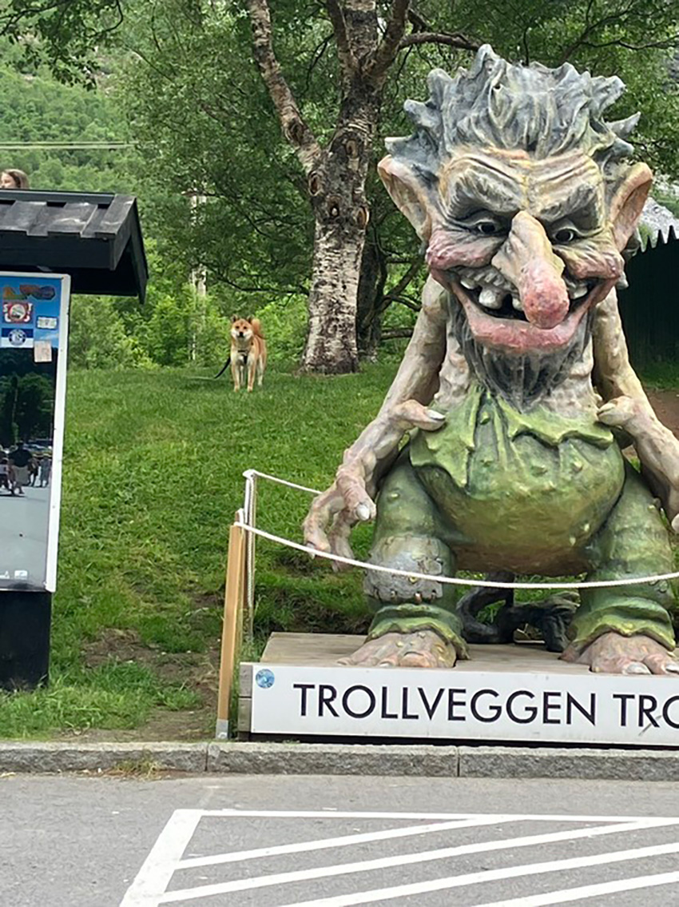
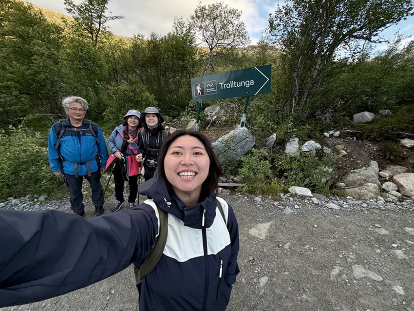
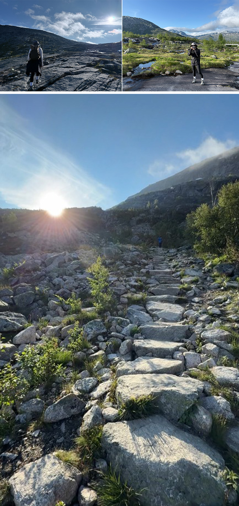
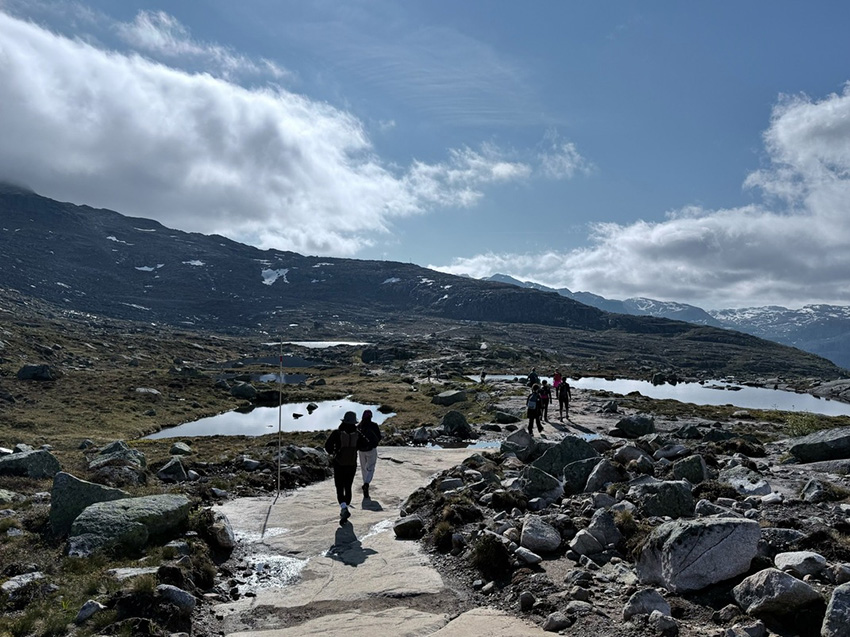
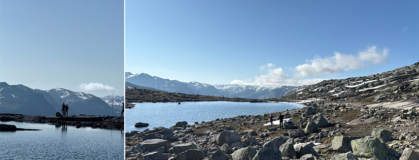
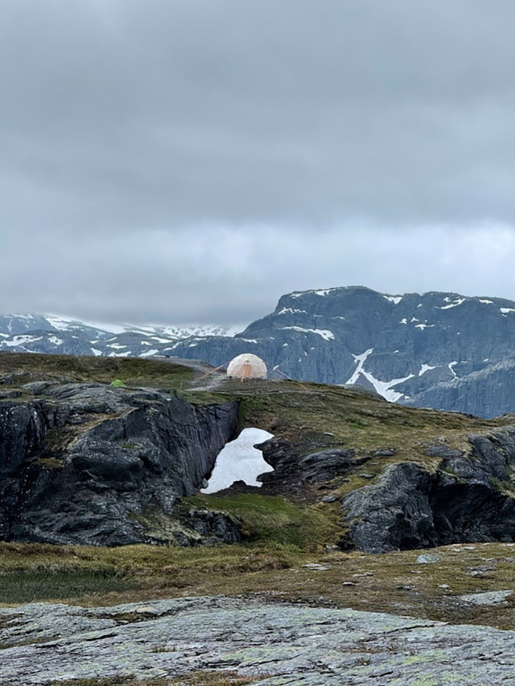
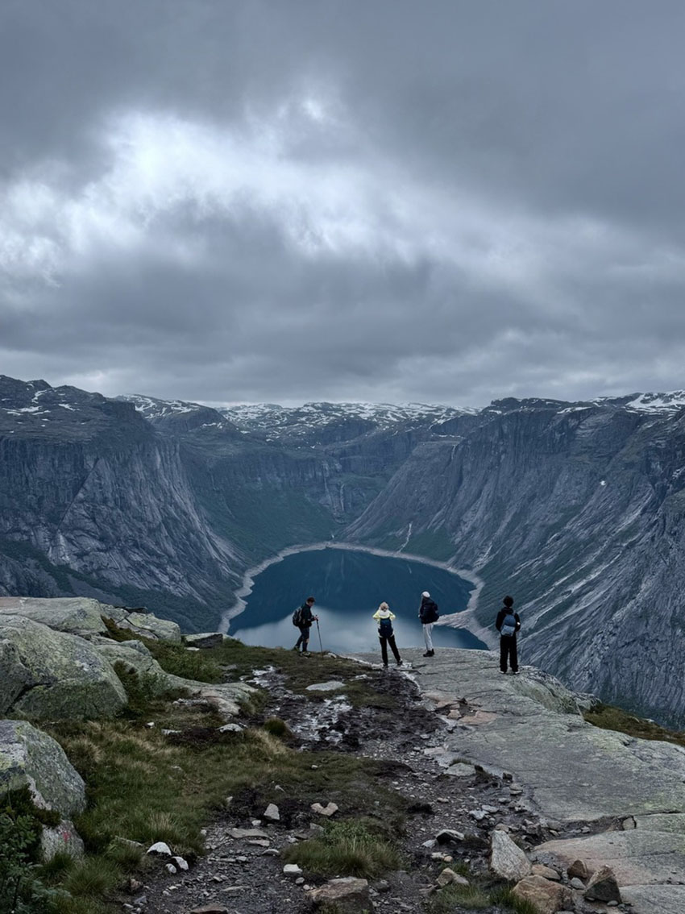

出發前的期待與準備
我一直對澳洲充滿著好奇，這次終於決定獨自踏上這片遙遠的土地。從訂機票、安排住宿到規劃行程，雖然準備的過程繁瑣，但也讓我對這次旅程充滿了期待。選擇了墨爾本和雪梨作為目的地，墨爾本的藝術與文化吸引了我，而雪梨的自然景觀和海灘更是讓我心動。我計劃在這兩個城市間來回，體驗不同的風景和文化。
|  |
墨爾本：文化與藝術的融合
我的旅程從墨爾本開始。第一天晚上，抵達墨爾本後，我便搭乘SkyBus快捷巴士直達市區，然後搭電車到位於市中心的Space Hotel，這家青旅不僅交通便利，且設施乾淨舒適，適合獨自旅行的我。由於時差和長時間的飛行，當晚我選擇稍作休息，並品嚐了當地的夜宵—夸父炸串，簡單卻美味，為這個城市留下了初步的印象。
|  |
第二天，我便開始了我的墨爾本探索之旅。首先來到的是坎布威爾週日跳蚤市集，這裡充滿了各式各樣的二手商品和手工藝品，讓我彷彿走入一個小型的寶藏世界。隨後，我漫遊在墨爾本的咖啡街——德格雷夫斯街，品嚐了當地著名的可頌，特別是Dukes Coffee Roasters的可頌，簡直是這趟旅行中的一大亮點。
|  |
接著，我前往了墨爾本的幾個知名景點，聖保羅座堂、霍西爾巷的塗鴉、維多利亞國家美術館等，每一處都讓我感受到濃厚的藝術氛圍。當天的最後，我來到聖基爾達海灘，儘管已是傍晚，但仍能看到海面上熠熠生輝的夕陽。這些美景讓我愛上了這座城市的獨特魅力。不過，最令我印象深刻的是大洋路一日遊，從早上7點出發，沿途欣賞到壯麗的海岸線和世界著名的十二門徒岩，這段行程不僅讓我感受到自然的壯觀，也讓我更加深入了解了澳洲的地理景觀。
雪梨：自然與城市的完美結合
在墨爾本待了五天後，我搭乘國內航班來到了雪梨。這座城市的景點繁多，但我最期待的是它的海灘和自然景觀。第一天，我抵達後直奔雪梨市中心的Big Hotel休息，並且準備迎接第二天的探險。
|  |
雪梨的第一站是邦代海灘，感受到了澳洲海灘的悠閒氛圍。在這裡，參觀了著名的邦迪冰山俱樂部，還有Milk Beach，可以看到完美的日落景象。這些海灘不僅有美麗的風景，還帶給我一份心靈的放鬆。
|  |
後續我前往了雪梨的幾個經典景點，包括雪梨歌劇院、雪梨港灣大橋和皇家植物園。每一個地方都充滿了歷史和文化，尤其是雪梨歌劇院的壯麗，讓我不禁感嘆這座城市的獨特魅力。
獨自旅行的感悟
這次的澳洲之行對我來說不僅是一次難忘的旅行，更是一段自我探索的過程。在墨爾本和雪梨之間的旅行中，我學會了如何獨自面對挑戰，如何適應不同的文化和節奏，並且在旅途中遇見了許多來自世界各地的朋友。我發現，獨自旅行不僅能夠讓我更專注於每個瞬間的美好，還讓我更深入地了解自己。從每一個景點、每一頓餐食到每一次與陌生人的交流，這些經歷都深深刻在我的心中。
|  |
結語：期待下一次的旅程
澳洲的這10天，無論是墨爾本的藝術文化，還是雪梨的自然美景，都讓我留下了深刻的印象。這段旅程不僅讓我享受了旅行的樂趣，更讓我在孤獨中找到了屬於自己的世界。我期待著，未來能夠再次踏上這片土地，探索更多未知的美好。
|  |